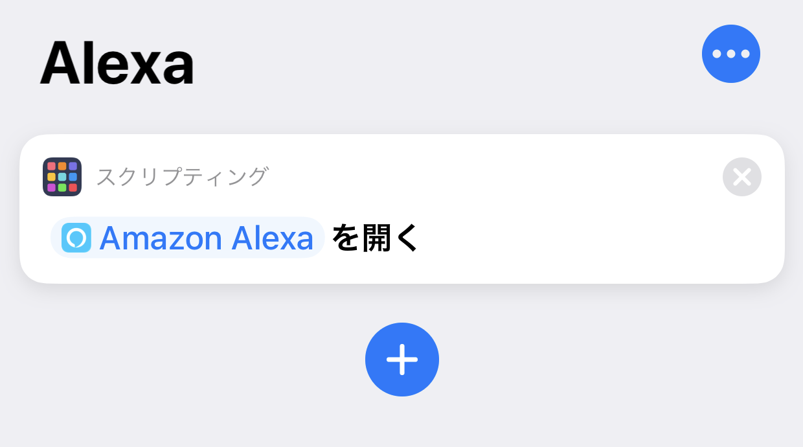

iPhone で「Ok Google」「Alexa」をやるには「Hey Siri, Ok Google」「Hey Siri, Alexa」と呼ぶ
「Hey Siri」を最近使い始めた。音声でなんかしたいと思うことは少ないが、ずっと自宅勤務で周りの目も気にならないし、検索窓を開くまででもない簡単な作業なら使いやすいかと思い、機能を有効にした。
Fire タブレットを持っているので「Alexa」も試してみたが、コチラは音声認識の精度が悪く、出来ることも Amazon の有料サービスに誘導されがちで微妙。
一番柔軟性があるのは「Ok Google」で、Nest Hub を買ったのもその柔軟性をかってのことだった。
ところで「Alexa」と「Ok Google」は、それぞれ「Amazon Alexa」と「Google アシスタント」アプリを導入すれば、iPhone でも使用できる。ただし、該当アプリを開いた状態でないと音声認識してくれない。
そこで、「Hey Siri」で Siri に対象のアプリを開かせるようにしてみた。
Google アシスタントの場合
Google アシスタントアプリの場合は、アプリの初期設定の時に「Siri ショートカットを追加」という項目が出てくるので、コレを有効にすれば OK。「Hey Siri, Ok Google」と呼びかけることで「Google アシスタント」を起動できるようになる。
ちなみに「Google アプリ」という検索用のアプリもあって、コチラもアプリ起動中の「Ok Google」に対応しているが、
- 「Google アプリ」の「Ok Google」は何でも Google 検索して検索結果画面を表示する
- 「Google アシスタント」の「Ok Google」はアシスタントとのチャット形式で回答を表示する
という挙動・機能の違いがある。
「Google アプリ」を呼び出す Siri ショートカットも存在するので、「Google アプリ」の設定から追加しておくと良いだろう。
- 参考 : 「Google アシスタント」日本語でもSiriショートカットから呼び出し可能に - iPhone Mania
- 参考 : ついにiPhoneのSiriからGoogleアシスタントが呼び出せるようになった！ | そうがわパソコンサポート
- 参考 : 音声はまさかの「Hey Siri,OK Google」。iPhoneのSiriからGoogleアシスタント起動が可能に - Engadget 日本版
Alexa の場合
Alexa はデフォルトでは Siri ショートカットを用意していない様子。
そこで、iOS ショートカットの「スクリプティング」→「App を開く」を使って「Amazon Alexa」アプリを指定し、そのショートカット名を「Alexa」にしてやる。
すると「Hey Siri, Alexa」と呼びかけることで Amazon Alexa アプリが起動するようになる。

そこまでして3つを併用しないかもｗ
とまぁやり方は紹介したものの、1つの iPhone で3つの音声アシスタントを併用することはないかな、と思う。ｗ